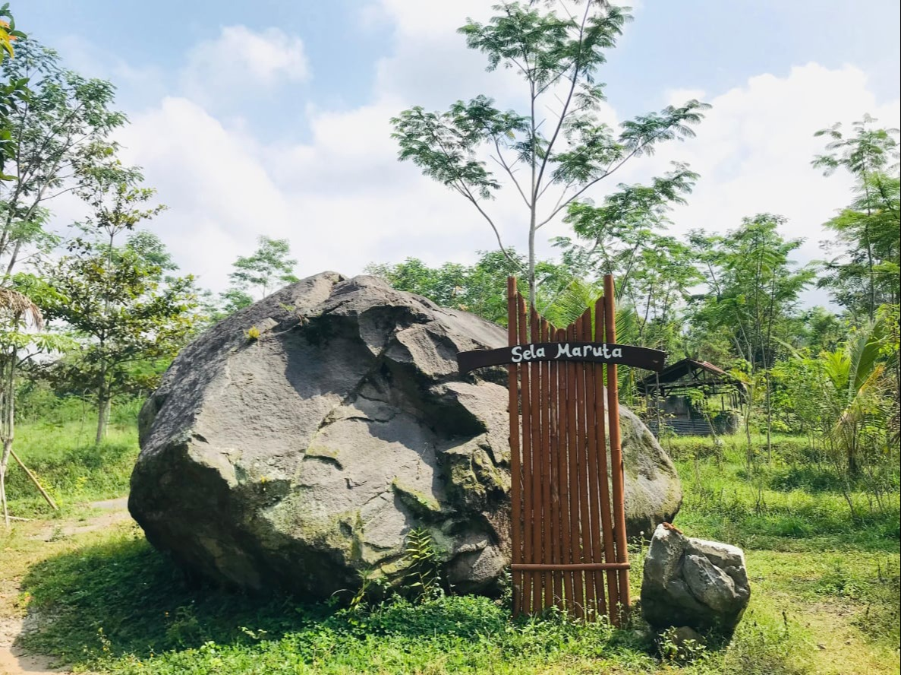

Best AI Website Maker
Wisata Sela Maruta merupakan salah satu objek wisata yang berjarak 10 km dari lereng Gunung Merapi yang dulunya merupakan pemukiman warga tepatnya di Dusun Kepuh, Kalurahan Kepuharjo, Kecamatan Cangkringan, Kabupaten Sleman, Daerah Istimewa Yogyakarta. Nama Sela Maruta ini berasal dari kata "Sela" yang berarti batu dan "Maruta" yang berarti angin sehingga dapat diartikan bahwa obyek wisata Sela Maruta merupakan wisata yang terdapat batu besar yang dulunya terbawa aliran lahar dan juga angin dampak adanya Erupsi Gunung Merapi 2010.
Wisata Sela Maruta ini menawarkan pesona alam yang asri serta melihat kuasa Tuhan akan dahsyatnya Erupsi Merapi 2010. Pesona alam yang asri dipadukan dengan pesona batu yang memiliki ukuran raksasa. Selain itu, wisata Sela Maruta ini juga terdapat sebuah gubuk kecil yang di dalamnya terdapat sisa-sisa barang milik warga masyarakat dusun kepuh yang terkena Erupsi Merapi 2010 seperti alat rumah tangga, sepeda, maupun kerangka-kerangka hewan ternak milik warga.
Best AI Website Maker